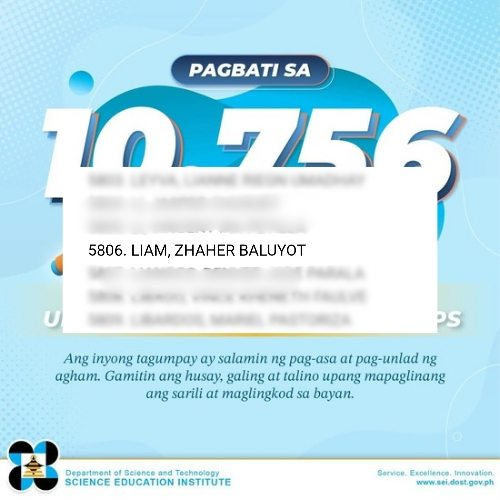
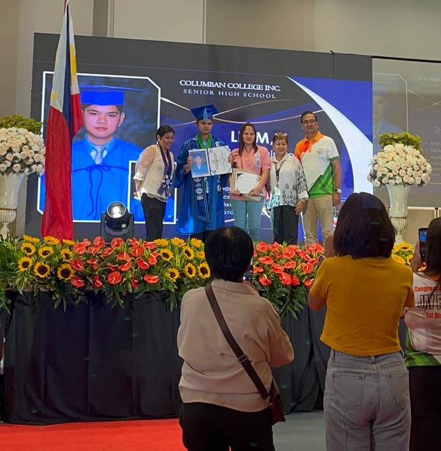
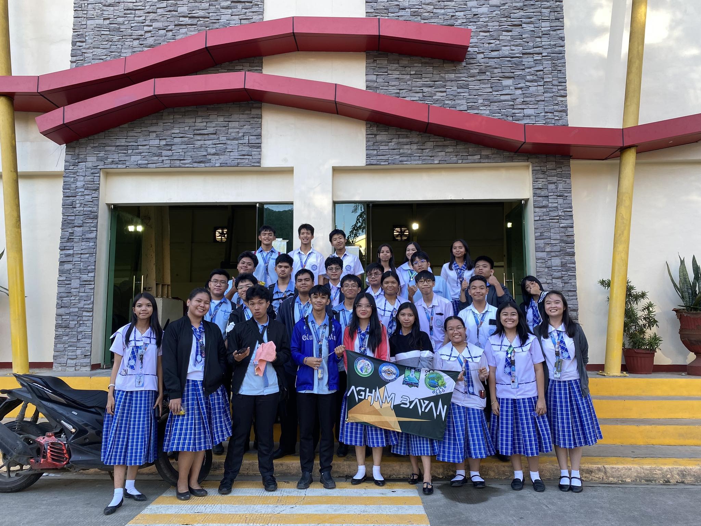
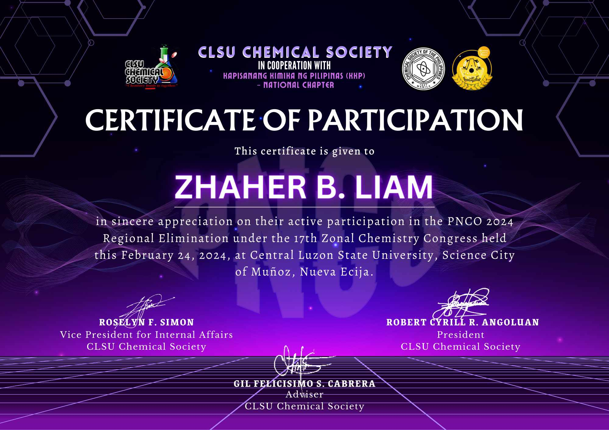
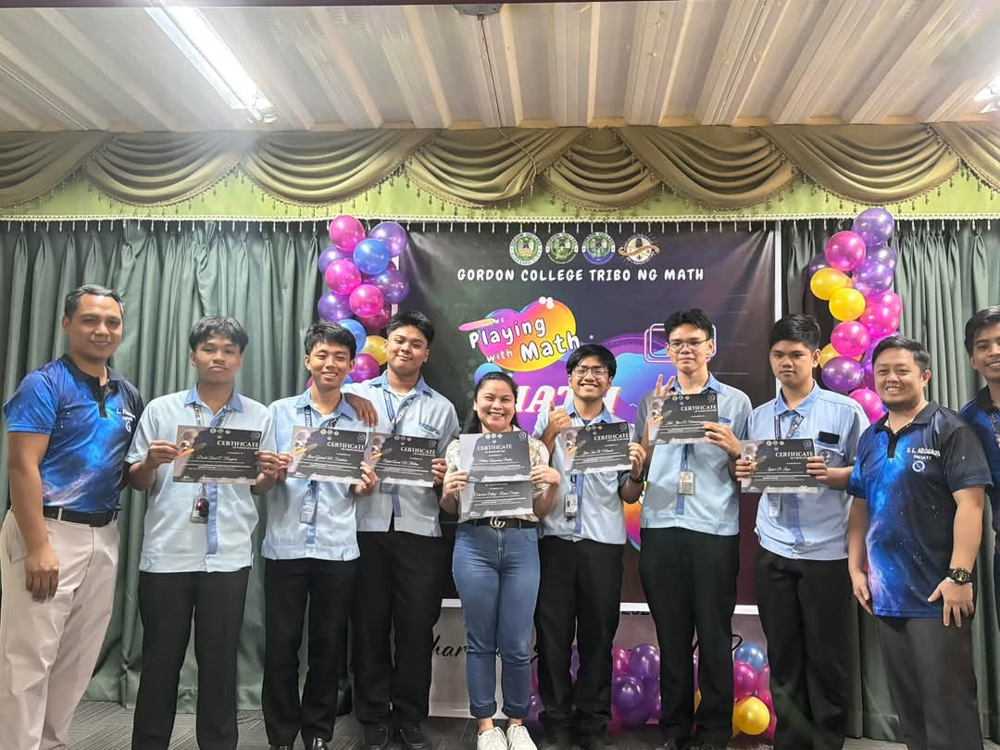

Passed the DOST-SEI Scholarship Examination
Obtaining a scholarship is an important milestone that shows commitment, diligence, and persistence. I didn’t expect to pass the examination because I didn’t have enough review. I just reviewed the night before the exam, and I focused on the subjects that I am not used to. After the exam, I had a feeling that I’d pass it, and at the same time, I didn’t. This is because I know that I had an almost perfect score on the mathematics part, which increases my chances of passing. Luckily, after months of waiting, I was very happy, and my heart was filled with joy because I saw my name on the list of passers. This achievement not only strengthens my commitment to maximizing my study but also fuels my ambition.

Graduated with Highest Honors
A very significant event in my life was my high school graduation. Before then, I was already aiming at graduating “With Highest Honors” because I told myself that this would be my last will and contribution to the basic education system. But during our second semester, things got out of hand on my part. I had a lot of problems and at the same time, my grandmother died. I don’t usually talk to my friends about my situation, but they are always there asking if I’m doing well. Before our graduation, I tried to recover from what happened. I started focusing on our projects, and I studied day and night for exams and quizzes. But I had no hope, I told myself that I should stop reaching for that goal because it’s too late. Thankfully, I was wrong. My adviser announced to me that I am the strand valedictorian of STEM, and I will be giving a gratitude speech. It was a memorable day for me because I made myself and my parents proud. My whole family congratulated me, and it was very heartwarming to feel their support and happiness.

Joined the Philippine Mathematical Olympiad
I was in 12th grade when I had the chance to join the Philippine Mathematical Olympiad. Because of this, I met new friends, and I had mathematical discussions with them. Even though our preparation was not enough, the experience was quite valuable on its own. I know that this is not the usual mathematics competition I used to join, and this tested my knowledge and critical thinking skills. During the competition, when I looked at the questions, my brain started to malfunction. It was so difficult, and it would require a lot of time just to get the answer unless you know some shortcuts. However, I can answer at most 8 questions, and the total number of it was around 30. I know it is not that much, and I know that I am no longer qualified for the national elimination. In addition, none of us qualified because our scores were below the passing mark. I considered it to be an achievement because I am able to become one of the representatives of our school, at the same time, I was chosen.

Joined the Philippine National Chemistry Olympiad
Still, there was a lack of preparation for this one. But at the same time, it was a memorable experience. So, this is the same as the Philippine Mathematical Olympiad, but it was focused on chemistry. It was not held face-to-face because the competition was done on Zoom. We were three representatives from our school, and during the competition, we were just in our homes. Luckily, we are qualified for the national elimination. But we didn’t continue because we didn’t have enough budget for transportation and food. I mean, the school didn’t have a budget!

Participated in the Search for the Olongapo Math Wizard
The experience in this competition was really funny. Because it was supposed to be a physics competition, and my adviser searched for students who were good at physics. Later on, he saw that the competition would no longer focus on physics but rather on statistics. So, the days given to us were a review for physics lessons, but now it was changed to statistics. At the same time, the days left for the competition were only 2. Imagine the time and pressure that was put on us. However, I am able to get the 4th place, and at the end, our coach treated us at savory.